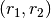

Introduction¶
kdcount is a simple API for brute force pair counting, there is a C interface and a Python interface. It uses a KDTree to prune the K-D spatial data; for each pair within a given distance D, a callback function is called; the user-defined callback function does the actual counting.
Periodic boundary is supported, and it is non-trivial.
The python interface is more complicated, and powerful:
- paircounting via
kdcount.correlate- clustering via Friend-of-Friend algorithm;
kdcount.cluster
The calculation can be made parallel, if sharedmem is installed.
The time complexity is O[(D / n) ** d],
where n is number density. Each pair is opened.
Note that smarter algorithms exist (more or less, O(D / n log Dn), I may remembered it wrongly See Gary and Moore 2001. The smarter algorithm is internally implemented, but not very much tested, and undocumented; do not use it.
Unfortunately in cosmology we usually want to project the pair separation along parallel + perpendicular direction relative to a given observer – in this case, the smarter algorithm become very difficult to implement.
The spatial complexity is a constant, as we make extensive use of callback functions
Installation¶
clone the code with
git clone http://github.com/rainwoodman/kdcount
Then install with
python setup.py intall –user
Correlation Function¶
Correlation function can be estimated in several ways. Common estimators are
- xi = DD / RR - 1
- xi = DD / DR - 1
- xi = (DD + RR - 2 DR) / RR
DD stands for the number of ‘data’ pairs in a distance bin , and RR stands for the number of ‘random’ pairs in the same distance bin. DR stands for the number of ‘random’ to ‘data’ pairs in the same distance bin. ‘random’ points are defined as input without any clustering, it sort of describes the ‘expected’ pairs.
For point like input data and random, kdcount.correlat.paircount can calculate DD and RR, as the sum1 attribute of the result.
For a simple case, N positions in a periodic box of volume V,
:displaymath:`RR = \frac{4\pi}{3} (r_2^3 - r_1^3) * \frac{N}{V} N`.